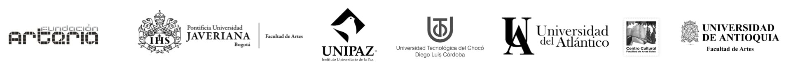

Primer Congreso Nacional e Internacional de Investigación Artística
La soberanía de los saberes culturales y los conocimientos sensibles del Sur Global
- Entidad: Ministerio de las Culturas, las Artes y los Saberes — Dirección de Artes
- Fecha: 3 al 6 de noviembre de 2026
- Lugar: Bogotá, Colombia
Sobre el congreso
El congreso busca reconocer, visibilizar y fortalecer la investigación artística como campo de producción de conocimiento legítimo, desde la diversidad de saberes y prácticas del Sur Global. Es un espacio permanente de encuentro, diálogo y producción de conocimiento desde las artes.
Ejes temáticos
Eje 1
Diversidad y Diálogo Intercultural.
Eje 2
Memoria y Creación.
Eje 3
Gobernanza y Sostenibilidad Cultural.
Aliados institucionales
- Fundación Arteria
- Universidad de Antioquia
- Universidad del Atlántico
- Universidad Distrital Francisco José de Caldas
- Pontificia Universidad Javeriana
- Universidad Tecnológica del Chocó
- UNIPAZ
- Teatro Mayor Julio Mario Santo Domingo